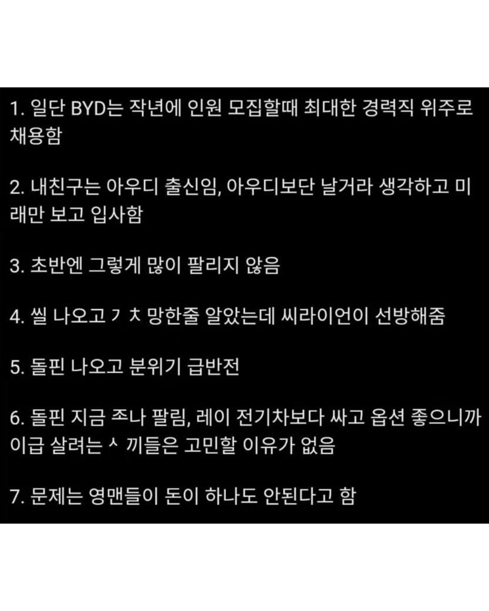
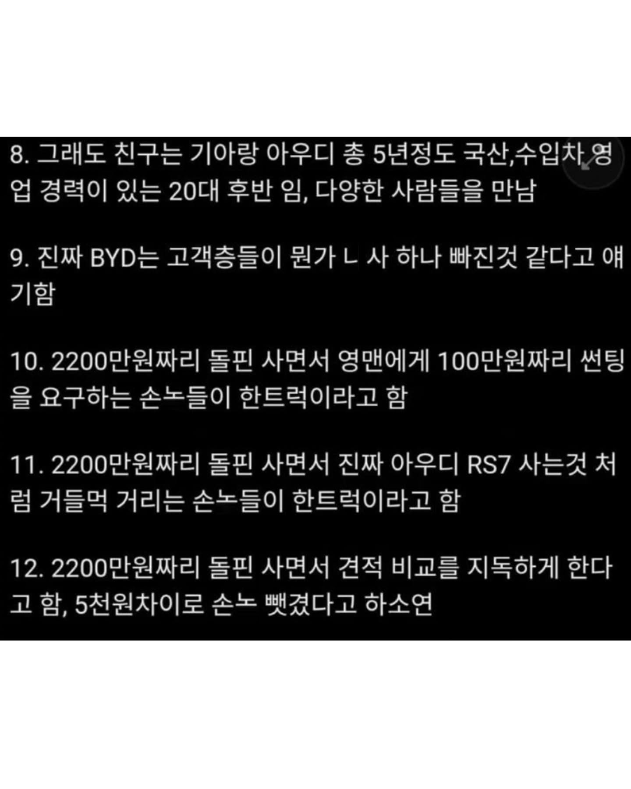
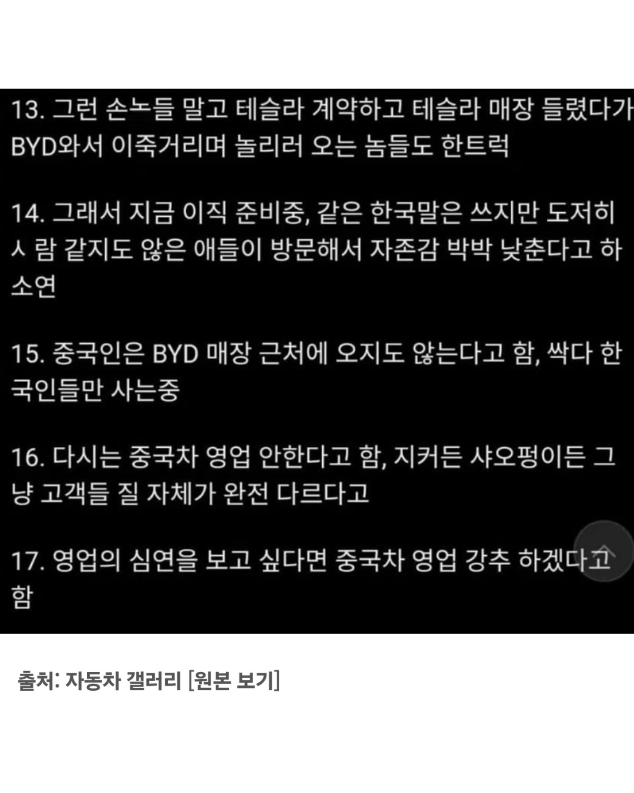

원래 제조업이라는게 기존제품은 신흥국에 따라잡힐수밖에 없는 구조임. 예전에 일본놈들이 한국차 개무시하던때처럼 똑같음.
일본꼰대들은 아직도 lg 삼성 무시함 ㅋㅋ
거격이 필터링해주는구나
본문의 차갤 댓글에도 있지만 차 안정성은 둘쨰치더라도 BYD 싸다고 사는건 폰 살때 할부원금 안보고 공짜폰이라고 신나서 사는거나 마찬가지임. 벤비아나 렉서스 이런건 차가 좋으니 가성비 안따지고 사고 테슬라도 FSD나 전비같은게 좋으니 돈 더주고 사는건데(가끔 테슬라 싸다고 그러는놈들 있는데 테슬라나 벤비아나 차값 대비 렌트비율은 비슷함) 가성비로 BYD 산다는건 진짜 개멍청한짓임. 무보증 60개월 2만km 렌트비 비교해보면 씨라이언7 제일 좋은 등급이 84만원이고 모Y 기본이 82만원임.
내친구도 BYD딜러인데 9번 존나 공감하더라
byd 조졌네 . 개짠돌이 나사빠진놈 이미지 생겼네 ㅋㅋㅋ
byd는 나사하나정돈 빠져야 사지 아니면 사긴 힘들듯
독신 수도권 출퇴근용 자가용 뭐가좋으까요?
앞으로 byd는 그렇게 보면 되겠습니까?
차 가격만 보면 되게 가성비로 보이는데, 수리비 보니까 '아 맞다 이 차도 어떻게 보면 수입차지?' 라고 생각하게 되더라
9번 맞는말인게 나사 빠져서 능지 처참으로 BYD같은거 사지 ㅋㅋ
그래 싸면 그만이지 ㅋㅋㅋㅋㅋㅋㅋㅋㅋㅋㅋㅋㅋㅋ
동남아가서 타봤는데 내돈내고는 절대살일없음
선팅 100만원은 못참지 ㅋㅋㅋ